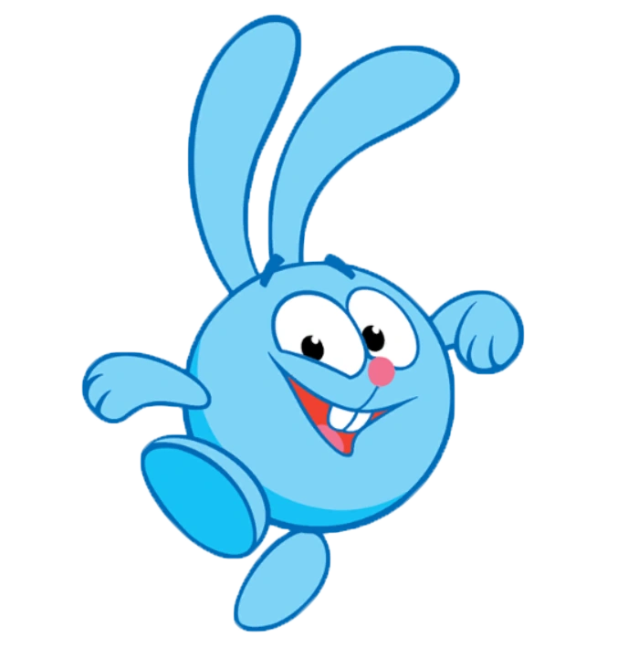
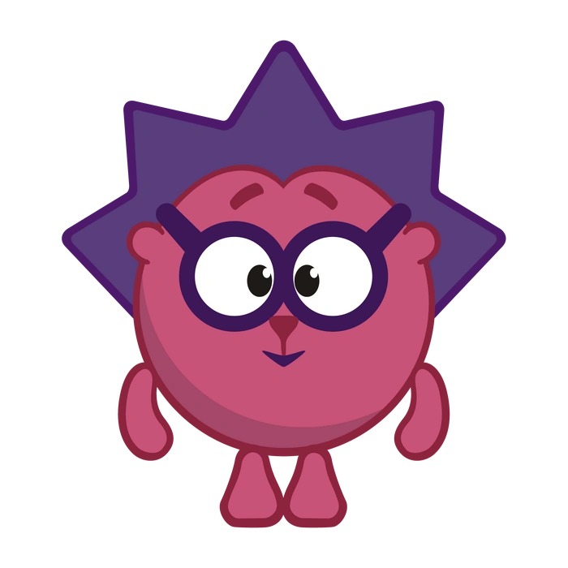
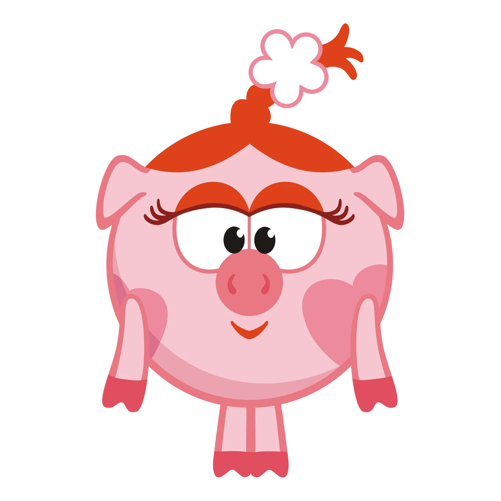
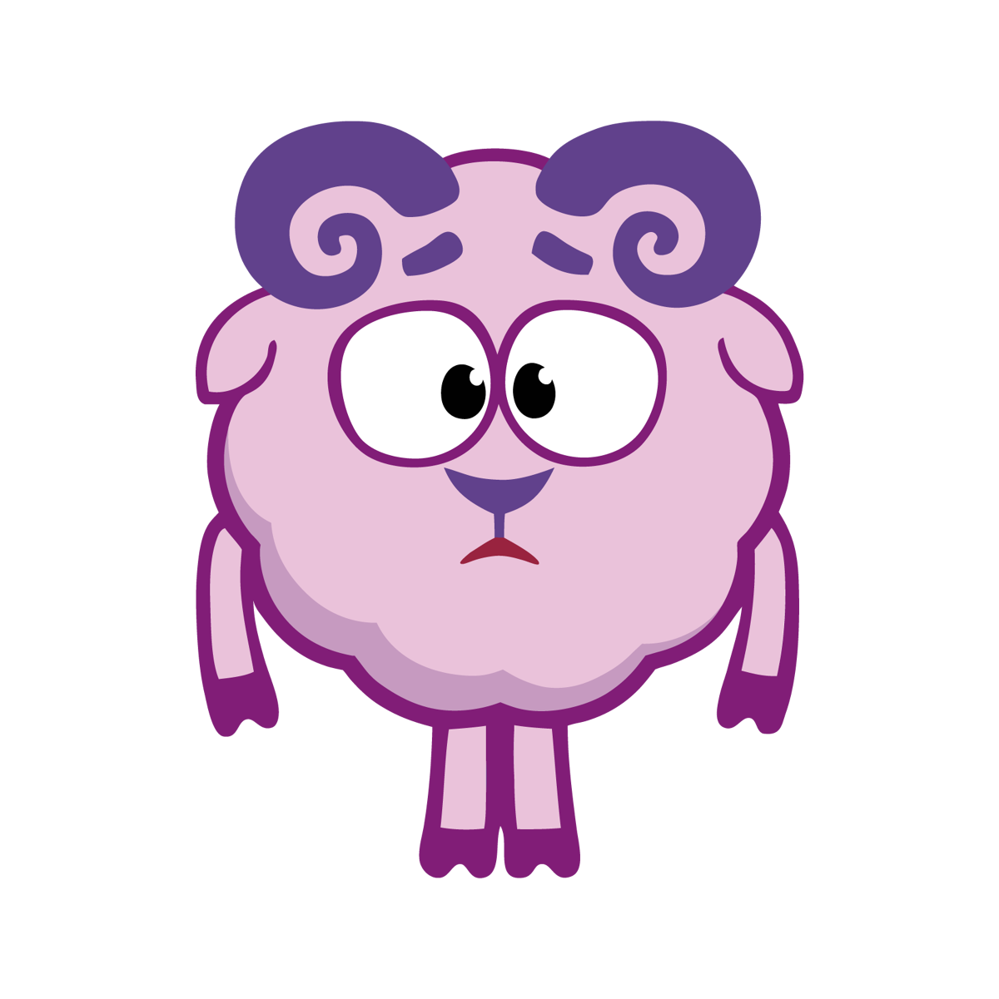
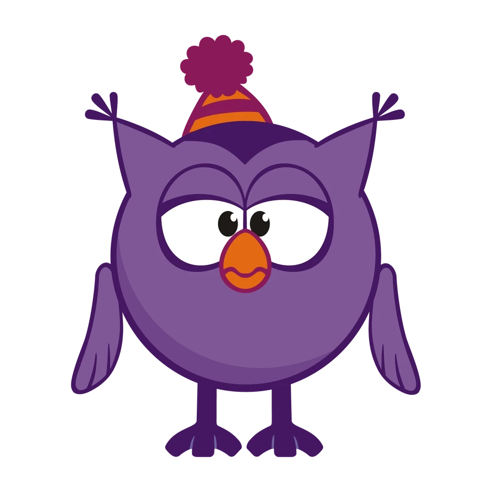
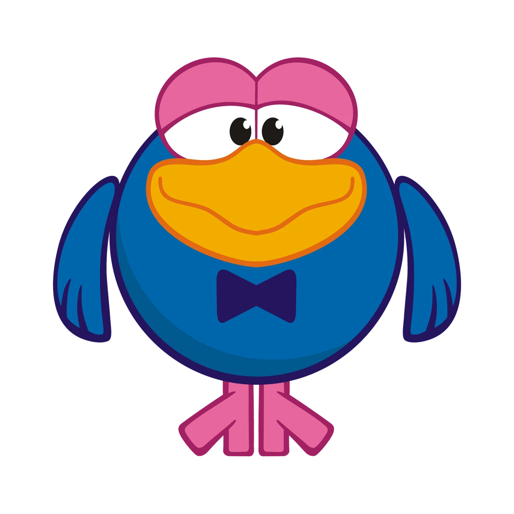
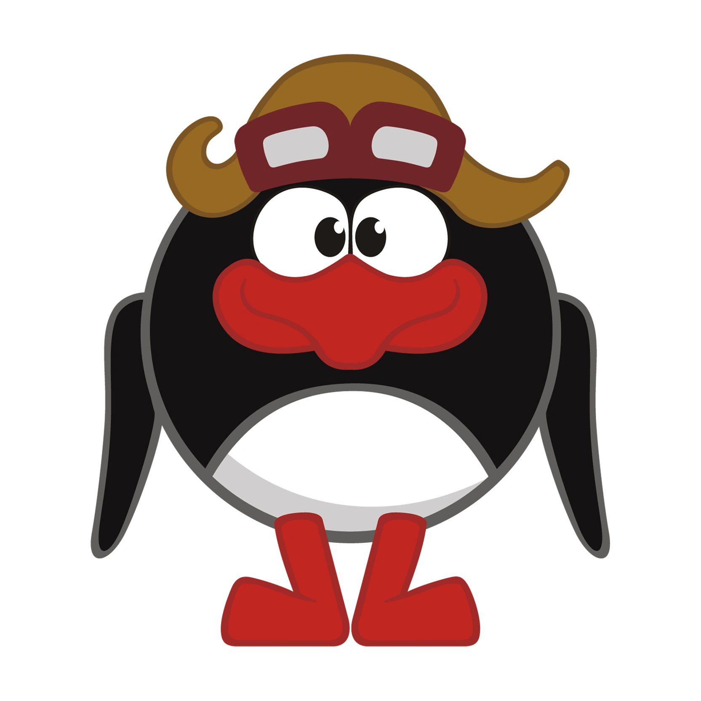
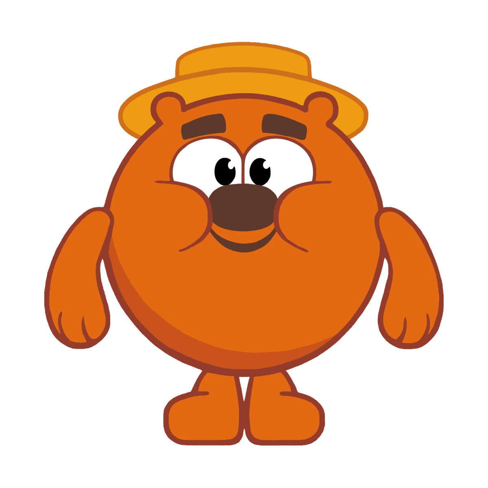
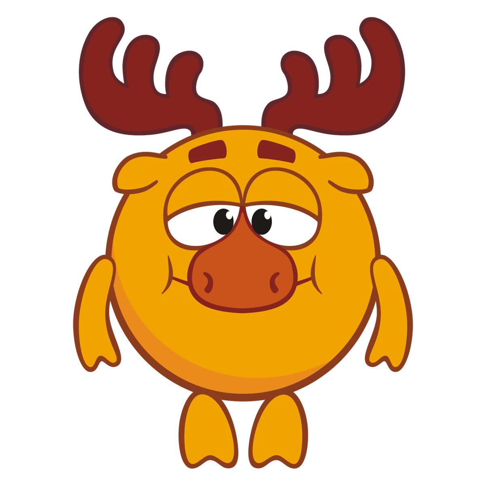

Содержание
Крош

Крош - энергичный, весёлый и любознательный кролик. Вечно придумывает развлечения и втягивает в них друзей.
Ёжик

Ёжик - спокойный, осторожный и рассудительный друг Кроша. Он часто помогает друзьям обдумывать решения и смотреть на ситуации с другой стороны.
Нюша

Нюша - свинка, которая мечтает быть принцессой. Часто может манипулировать друзьями, но также очаровывает своим обоянием и умом.
Бараш

Бараш - поэт, легко раним и требует к себе много внимания. Его рассуждения в некоторых сериях заставляют о многом задуматься.
Совунья

Совунья - врач, спортсменка и отличный повар. В сериях показана очень хозяйственной и заботливой, всегда готовой дать совет и поделиться мудростью.
Карыч

Карыч - артист с интересным прошлым. Он обаятельный, любит быть в центре внимания, а также обладает отличным слухом.
Пин

Пин - изобретатель, говорящий с немецким акцентом. Он гений, который может собрать из подручных предметов всё что угодно.
Копатыч

Копатыч - огородник. Он довольно простой, но с интересной житейской мудростью.
Лосяш

Лосяш - учёный. Интеллигентный, увлечённый наукой до безумия, из-за этого его дом часто в беспорядке.
Быстрая характеристика
| Персонаж | Характер | Увлечения |
|---|---|---|
| Крош | Весёлый, энергичный | Приключения, активные игры |
| Ёжик | Спокойный, осторожный | Коллекционирует фантики |
| Нюша | Мечтательная, эмоциональная | Мода, сладости |
| Бараш | Романтичный, ранимый | Поэзия |
| Совунья | Хозяйственная, сентиментальная, спортивная | Спорт, кулинария |
| Карыч | Обаятельный, хвастливый | Фокусы, пианино |
| Пин | Изобретательный, рассеянный | Техника |
| Копатыч | Добродушный, трудолюбивый | Огород, мёд, танцы |
| Лосяш | Интеллигентный | Наука |